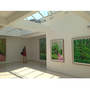

סיור קלאסי, אין ספק שטיול באתרים הקלאסיים של לונדון בליווי ההסברים הנכונים משדרג את הטיול. בסיור זה הנכם מוזמנים לראות את לונדון הקלאסית מזווית אחרת...לונדון הקלאסית עם הצצה אל הסיפורים הפיקנטיים ואל מאחורי הקלעים.
סיור קלאסי, אין ספק שטיול באתרים הקלאסיים של לונדון בליווי ההסברים הנכונים משדרג את הטיול. בסיור זה הנכם מוזמנים לראות את לונדון הקלאסית מזווית אחרת...לונדון הקלאסית עם הצצה אל הסיפורים הפיקנטיים ואל מאחורי הקלעים.- סיור שכונות, בסיור זה הנכם מוזמנים לצאת קצת מאזור המרכז הסואן ומאתרי החובה שבמדריך הטיולים ולנשום אוויר צח... הטעם האמיתי של לונדון נמצא בין הרחובות הצדדים ובקרב השכונות הציוריות שהזמן בהם כאילו עצר מלכת...
 סיור ילדים, ידוע לכולנו כי לונדון הינה בראש רשימת היעדים לילדים...אבל הסוד הוא ליצור יום מהנה לכל המשפחה. בסיור זה הנכם מוזמנים לחוויה המשלבת בין תחומי העניין של הקטנים עם הגדולים כך שכל אחד מבני המשפחה ירגיש שהטיול נתפר עבורו..
סיור ילדים, ידוע לכולנו כי לונדון הינה בראש רשימת היעדים לילדים...אבל הסוד הוא ליצור יום מהנה לכל המשפחה. בסיור זה הנכם מוזמנים לחוויה המשלבת בין תחומי העניין של הקטנים עם הגדולים כך שכל אחד מבני המשפחה ירגיש שהטיול נתפר עבורו.. סיור פאבים, סיור בלונדון לא יהיה שלם בלי ביקור בפאב אנגלי טיפוסי (וגם אם אינכם חובבי השתייה החריפה). בסיור זה הנכם מוזמנים להתנער קצת מתדמית התיירים ועם רדת החשיכה לחוש לונדונים אמיתיים. סיור זה הוא אחד המומלצים!
סיור פאבים, סיור בלונדון לא יהיה שלם בלי ביקור בפאב אנגלי טיפוסי (וגם אם אינכם חובבי השתייה החריפה). בסיור זה הנכם מוזמנים להתנער קצת מתדמית התיירים ועם רדת החשיכה לחוש לונדונים אמיתיים. סיור זה הוא אחד המומלצים!
הסיור המשולב- האולטימטיבי לכל האוהבים תפריט טעימות. בסיור זה הנכם מוזמנים לשלב בין פינות החמד החבויות שבעיר לבין המקומות הסואנים והשוקקים.
מומלץ לשלב במסלול מגוון של צבעים וטעמים- טבע, אומנות שווקים ועוד.. ולהתחכך בדוכנים של השווקים האותנטיים בעיר.
סיורים אלו יסתיימו בחלקים האטרקטיביים של העיר, שכדאי לשוטט בהם עצמאית. לדוגמא; באזורי 'שופינג' מיוחדים במינם שאינם נמצאים על ציר המטיילים הקלאסי.
-  סיור הגלריות יציע לכם מבט קרוב על סצינת האומנות והצילום העדכנית באופן מקצועי ולא פורמלי תוך כדי שיטוט באזורים מרתקים של העיר הגדולה. כחלק מהסיור תהיה לנו האפשרות לבקר בחללי התצוגה המיוחדים ולהנות מהעבודות של האומנים והאוצרים מהמפורסמים בעולם ובמדיומים שונים: ציור, צילום ,וידאו ,עיצוב ומולטימדיה.
- סיורים מחוץ לעיר, ההיצע דינמי ומשתנה בהתאם לתקופה. צרו איתנו קשר ונתאם סיור לאחת מהערים האוניברסיטאיות או לאזור ה countryside הירוק והפסטורלי.


{kind=link}
{kind=link}
{kind=link}
הסיורים שלנו בעיקרם אישיים.
סיורים בקבוצות קטנות יתואמו מראש מפעם לפעם ולרב בעונות הקיץ והחגים.
הכנסו לעמוד הפייסבוק שלנו והרשמו לרשימת הדיוור לצורך עדכונים שוטפים בנוגע לסיורי קבוצה.
לונדון היא אחת מהבירות העולמיות והמבחר העצום בעיר בכל תחום עשוי לבלבל.
במהלך הסיור, נשמח לייעץ ולצייד אתכם בהמלצות וטיפים כיצד כדאי לתכנן את ימי הביקור, על גבי מפת העיר.
-
כתיבת תיק טיול בלונדון מפורט ונוח לשימוש.
-
שיחת יעוץ מקדמית (בסקייפ/טלפון) בת כחצי שעה/שעה ובה נוכל לייעץ בבניית שלד הטיול, להמליץ על אירועים מיוחדים המתקיימים בעיר כשאתם כאן: הופעות, תערוכות, פסטיבלים, שווקים, מסעדות ועוד.
-
רכישת כרטיסים מראש לאטרקציות ולמופעים.